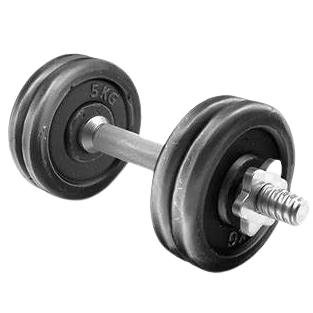
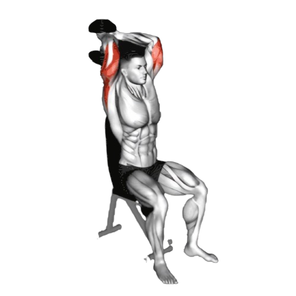
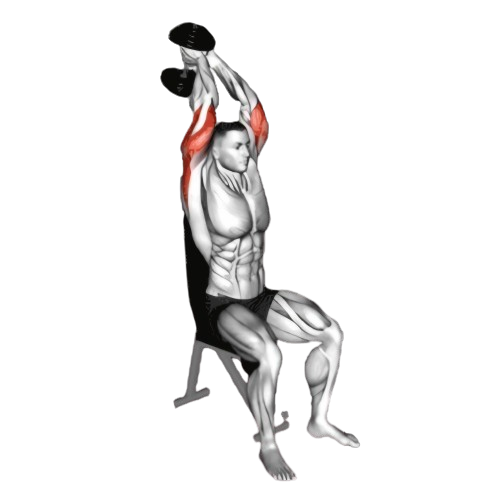

덤벨 트라이셉스 익스텐션

- 벤치에 앉거나 서서 덤벨을 양손으로 잡는다.
- 팔을 머리 위로 곧게 들어올리고, 팔꿈치를 약간 구부린 상태로 시작 자세를 잡는다.
- 팔꿈치를 고정한 상태에서 천천히 덤벨을 머리 뒤쪽으로 내린다.
- 이때 호흡은 마신다.
- 팔 뒤쪽(삼두근)의 자극을 느끼며 팔을 천천히 펴 덤벨을 다시 위로 들어올린다. 상체나 어깨가 흔들리지 않도록 안정된 자세를 유지한다.
- 이때 호흡은 뱉는다.

주의사항
- 팔꿈치가 움직이면 삼두근에 집중적으로 자극이 가해지지 않는다.
- 상체가 흔들리지 않게 허리를 곧게 핀다.
- 덤벨을 내릴 때 팔꿈치를 너무 많이 구부리거나 덤벨이 지나치게 머리 뒤로 내려가면 부상의 위험이 있으니 삼두근의 자극이 유지되는 범위 내에서 동작한다.
- 지나치게 무거운 중량은 잘못된 자세를 유발할 수 있어 부상의 원인이 된다.
운동부위 및 효과
- 삼두근
- 덤벨 트라이셉스 익스텐션은 삼두근에 집중해 팔 라인을 예쁘게 가꾸는 데 효과적이며, 초보자도 쉽게 접근할 수 있는 운동이다.